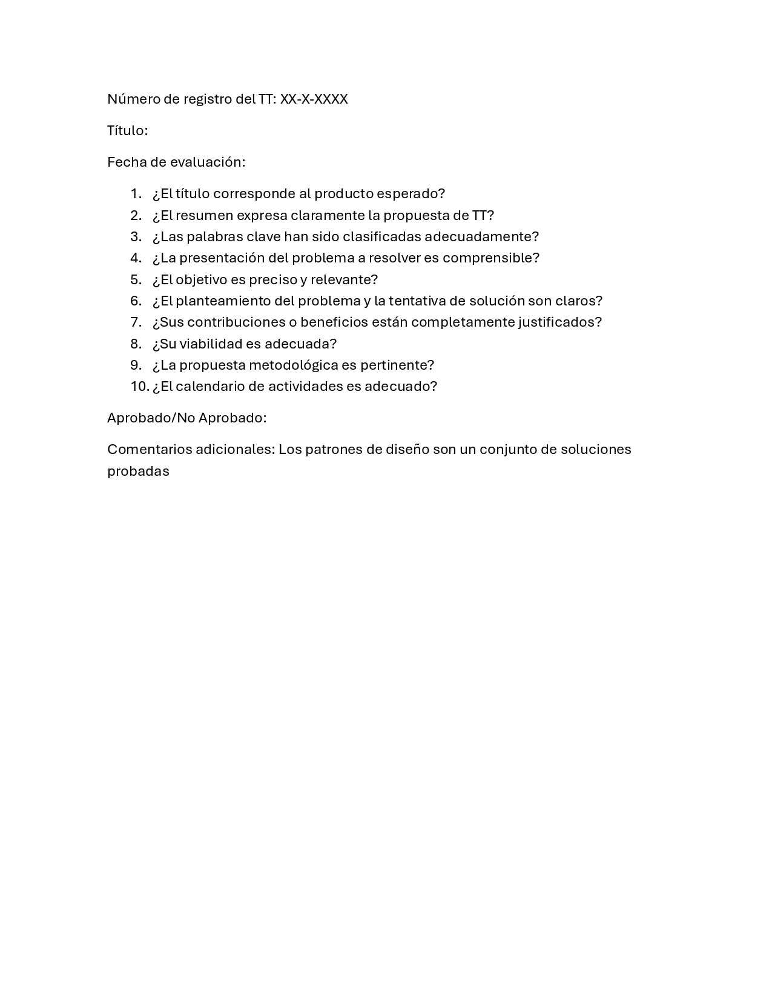

Descarga de Documentos
Documento Rector
Este documento detalla la manera en la cual los Protocolos de Trabajos Terminales se llevan a cabo, así como los roles de cada uno de los participantes en el seguimiento de Trabajos

Descargar
Preguntas de Evaluación
En este docuemnto se muestran los puntos que se evaluarán en las presentaciones de Trabajos Terminales. Estas preguntas son respondidas por los Sinodales encargados de los Protocolos
Descargar